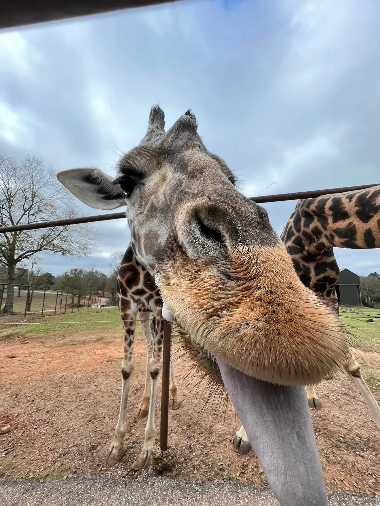
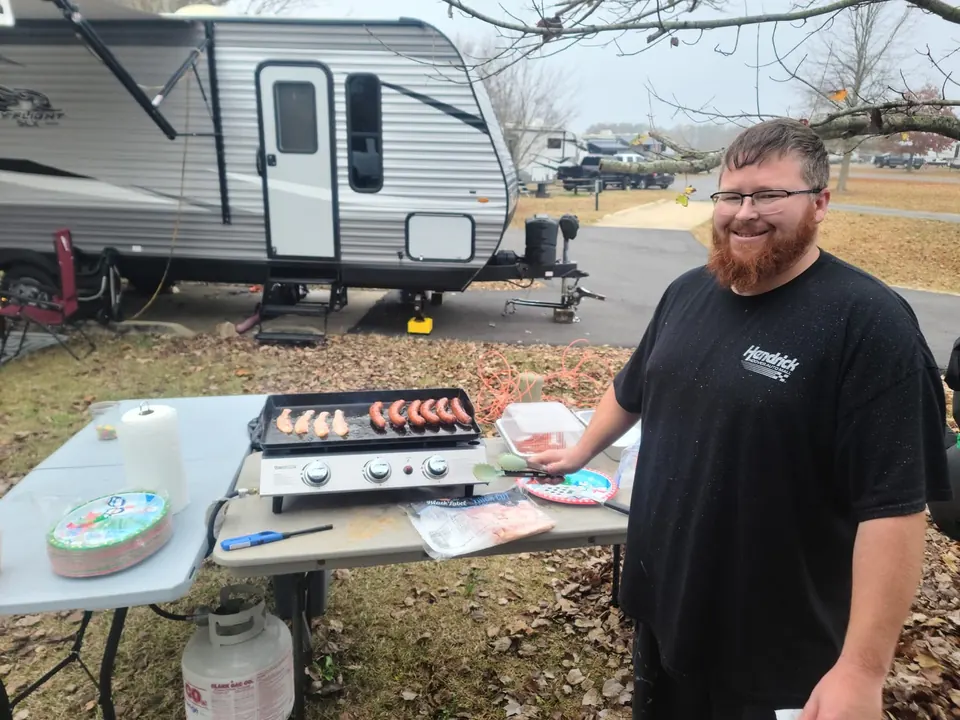

Pine Mountain, GA with Kids: Wild Animal Safari + the Georgia Aquarium
Zebras at the window, a giraffe tongue to the face, and whale sharks swimming over our heads. Here's our 2022 Georgia camping trip.

Disclosure: This post contains affiliate links. If you buy through our links we may earn a small commission at no extra cost to you. We only recommend gear we actually use.
Some trips are about the campground. This one was about the animals. In 2022 we camped near Pine Mountain, Georgia, and built the whole trip around two stops: a drive-through safari where the animals come right up to your car, and a day in Atlanta at the Georgia Aquarium. Between the two, we probably saw more animals in one weekend than in the rest of the year combined.
Wild Animal Safari: bring snacks, roll the windows down
Wild Animal Safari is a drive-through park on a 3.5-mile trail through the Georgia pines. You buy a cup of feed, roll down the window, and drive slowly. The animals already know how this works, and they walk right up to see what you've got.
The zebras came first. James ended up feeding one straight through the driver's window. Then a fallow deer with a huge rack of antlers trotted up like he had an appointment. A spotted axis deer let us boop his nose. An ostrich planted himself in the middle of the road and stared us down until he was ready to move.
Then came the giraffes. Nothing gets you ready for a giraffe leaning its whole head over the fence and pushing a purple tongue at your camera. We have the photo to prove it.
The animals don't care that it's your car. Roll the window down and you're part of the feeding route.
After the drive, we walked through the Walkabout Adventure Zoo. It has the animals that can't roam free, plus a petting zoo. We spotted a kangaroo hopping out of a little red barn, a white tiger pacing its enclosure, and water buffalo resting down by the lake.
At a glance: Wild Animal Safari
- Where: 1300 Oak Grove Rd, Pine Mountain, GA
- Drive-thru: a 3.5-mile trail; plan on 45 minutes or more, longer if the zebras block the road
- Walkabout Adventure Zoo: 50+ species and a petting zoo
- Open: every day except Thanksgiving and Christmas
Details as of when we wrote this. Check animalsafari.com for current hours and tickets before you go.
Safari tips from our car
- Expect slobber. Your windows, doors, and probably your sleeves are going to get licked. Don't take your new truck.
- Hold the feed low. Hold it up by your face and you're inviting a tongue to the face.
- Go slow and let others pass. The best moments happen when you stop and let the animals come to you.
- Keep wipes and a trash bag in the front seat. Feed dust and animal spit go everywhere.
The Georgia Aquarium: worth the drive to Atlanta
Pine Mountain is about 80 miles southwest of Atlanta, so a day at the Georgia Aquarium is an easy add-on. Don't skip it. The aquarium is downtown, across from Centennial Olympic Park, and it's home to whale sharks. Most people never get to see those.
The centerpiece is Ocean Voyager, a 6.3-million-gallon habitat with a huge viewing window and an underwater tunnel. We stood at that window and watched the whale shark glide past, and the people at the glass turned into silhouettes against all that blue. In the tunnel, manta rays and a whale shark swam right over our heads. Sea turtles drifted by and one came straight up to the glass for a closer look.
The belugas drew a crowd every time they swam past the window. The shark gallery had hammerheads and sand tigers cruising under moody blue light. And the giant spider crabs under red light are the stuff of nightmares, but you can't stop looking.
Georgia Aquarium tips
- Go early. Get there when the doors open and head straight to Ocean Voyager before the crowds and school groups.
- Take your time in the tunnel. The whale sharks and mantas circle back, so wait for them.
- Leave the RV at camp. Downtown Atlanta parking isn't built for a rig. Drive the tow vehicle in for the day.
Tickets and current exhibits: georgiaaquarium.org.
Back at camp
Between the safari and the city, the best part of the day was the slowest: back at the campsite with the griddle going, sausage and bacon sizzling, and nowhere else to be. The griddle sits on our roll-up table, and the setup hasn't changed since.

Aluminum Roll-Up Table
Rolls up small, sets up in a minute, and wipes clean. Our griddle station on every trip.
Check priceWhere to park the RV near Pine Mountain
If you're planning your own trip, there are good options close to the safari:
- F.D. Roosevelt State Park is Georgia's largest state park. It has wooded sites, lake views, and miles of hiking trails.
- Pine Mountain RV Resort is a full-service RV park with a pool, a playground, and a dog park. It's close to Callaway Gardens and the safari.
Either one puts you a short drive from Wild Animal Safari and Callaway Gardens, and in range of Atlanta for an aquarium day.
Would we do it again?
In a heartbeat. The zebra at the window, the giraffe tongue, the whale shark over our heads: it was one great moment after another. If you have little animal lovers, Pine Mountain gives you a full weekend of "did you SEE that?!" without a plane ticket.
See all 26 photos from this trip in our album →
Happy trails, y'all.
— James & Mallory 🐾